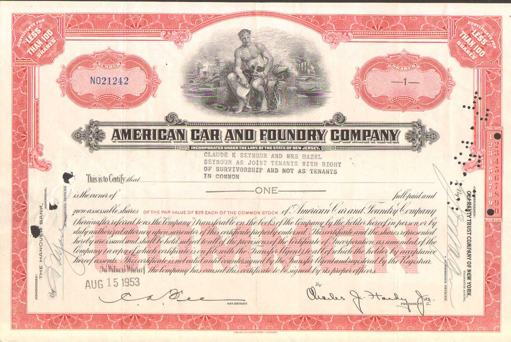

Акции — это ценные бумаги, которые подтверждают право владельца на определенную долю в бизнесе. Купили вы акцию Microsoft и можете всем смело говорить, что вы стали совладельцем и у вас есть доля в бизнесе данной корпорации.
Заработать на акциях можно в двух вариантах:
1) Вы купили акцию, например, за 100$, а продали через n срок за 150$, итого вы заработали 50$.
2) Вы держите акцию и получаете дивиденды, это часть прибыли организации, которая распределяется между акционерами. Например, у вас 2 акции по 1000$, дивидендная доходность составляет 1%, в итоге вы получите в n день свои заслуженные 20$ к имеющимся акциям.
Пример старинной классической бумажной акции.
Облигации — это когда вы кредитуете компанию или государство. Так, давайте поподробнее. Есть компания N, ей необходимы деньги, вы даете ей деньги, а взамен получаете облигацию, в которой указано сколько денег у вас взяли в долг, когда их отдадут и с каким процентом. Это классическая долговая бумага, которая представляет по факту удостоверение займа.
Облигации бывают государственные, так называемся ОФЗ (Облигации федерального займа), региональные облигации, например, какого-нибудь Красноярского края или же корпоративные, например, Челябинской строительной компании.
Пример старинной классической бумажной облигации с купонами.
Фонды (ETF) — это готовый набор определенных бумаг. Фонд покупает акции различных компаний и выпускает свои универсальные акции, вы покупаете акцию фонда и начинаете владеть долями во всех акциях, которые есть в данном фонде.
С точки зрения инвестора, это закрывает вопрос необходимости диверсификации портфеля за относительно небольшую сумму. Например, вы ходите купить акции банков BAC, GS, MS, но денег у вас не хватает, вы берете и покупаете фонд KBE, в который включены все известные банки.
• Лонг — долгосрочная позиция, или длинная. Таковой считается покупка ценных бумаг, которая приносит доход в долгосрочной перспективе, т.е. трейдер открывает позицию с расчётом получения прибыли от роста рынка.
• Шорт — краткосрочная позиция, или короткая. Целью шорта является получение прибыли от падения рынка. В этом случае трейдер берёт ценную бумагу у брокера и продаёт её по определённой цене, после падения выкупает акцию обратно, разницу в цене оставляет себе.
^